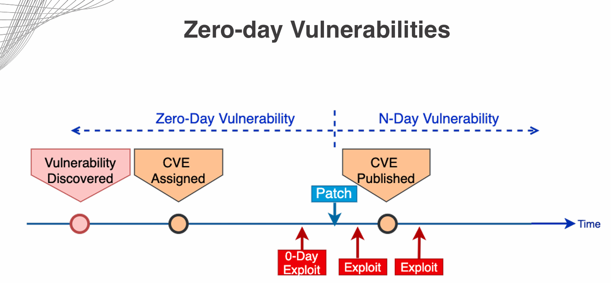

Date Taken: Fall 2025
Status: Work in Progress
Reference: LSU Professor Joseph Khoury, ChatGBT
Modern Computing isn't just about desktops and phone, we are surrounded by hardware devices and many don't run on a traditiotnal operating system or having very limited protectopn which introduce new security risks.
Vulnerabilities of security in devices had grown dramtically because almost everything is connected to the internet. Traditional security approach are no longer enough in which case the defender will need to rethink their appoarch. Hardware protection has become as important as protecting software due to IoT being everywhere.
Firmware is software that lives inside hardware devices. You can think of it as the operating system of the hardware, controlling how the device works at a low level.
Firmware is powerful but risky; if it is not updated quickly, attackers can exploit devices before the fix is released.
When hardware or software reaches the end of its life cycle, it has big security and maintenacne implications
Device/Techonologies reaching EOSL is a serious security risk. Always track which systems are or near EOL/EOSL because no security patches will be update in which open doors for attackers
Some devices and system stick around longer then intended. Although they can still work they often pose to security challenges.
Some older devices, operating system, applications, or middleware that are still in use. They may be running on EOL software, meaning no new security patches or vendor support
May be running end-of-life (EOL) software, meaning no new security patches or vendor support
May require additional security measures to protect them from vulnerabilities
Virtualization technology allows multiple virtual machines (VMs) to run on a single physical machine. While this offers benefits like resource efficiency and isolation, it also introduces unique security challenges. Quantity of resources varies between VMs and the host machine can lead to vulnerabilities if not properly managed.
Virtual Machine (VM) escape is a security vulnerability that allows an attacker to break out of a virtual machine and gain access to the host system or other VMs running on the same host. This can lead to unauthorized access, data breaches, and other security issues. Once an attacker escapes a VM, they can potentially control the host system and all other VMs on it. This would be a huge security risk, especially in environments where multiple VMs are used for different purposes. To protect against VM escape attacks, consider the following strategies:
VM escape attacks exploit vulnerabilities in the hypervisor or the VM software itself. Attackers may use techniques such as buffer overflows, code injection, or exploiting misconfigurations to break out of the VM. Once they have escaped, they can potentially access the host system and other VMs, leading to a wide range of security issues.
The hypervisor manages the relationship between physical and virtual resources. Available RAM, storage space, CPU availability, etc. These resources can be reused between VMs to optimize performance and efficiency. Data can inadvertently be shared between VMs, and timely updates to the memory management features and security patches can mitigate these risks. Resource reuse in virtualized environments can lead to security risks if not properly managed. Attackers may attempt to exploit shared resources between VMs to gain unauthorized access or escalate privileges.
Supply chain risks refer to the potential vulnerabilities and threats that can arise from the various components and services involved in the production, distribution, and maintenance of hardware and software. These risks can originate from third-party vendors, manufacturers, or even internal processes within an organization. Supply chain attacks can lead to the introduction of malicious code, backdoors, or other vulnerabilities into products before they reach the end user. To mitigate supply chain risks, organizations should implement robust security measures throughout their supply chain, including:
By proactively addressing supply chain risks, organizations can reduce the likelihood of successful attacks and enhance their overall security posture.
The SolarWinds supply chain attack, discovered in December 2020, is one of the most significant cyber espionage incidents in recent history. Attackers compromised the SolarWinds Orion software platform, which is widely used for IT management and monitoring. By injecting malicious code into a software update, the attackers were able to gain access to the networks of numerous organizations, including government agencies and Fortune 500 companies. This attack highlighted the vulnerabilities present in supply chains and the potential impact of third-party software on organizational security.
The SolarWinds attack demonstrated the importance of supply chain security and the need for organizations to implement robust security measures throughout their supply chains. It also underscored the challenges of detecting and responding to sophisticated cyber threats that can exploit trusted relationships between organizations and their vendors.
In response to the SolarWinds attack, many organizations have reevaluated their supply chain security practices and implemented additional measures to protect against similar threats in the future. This includes increased scrutiny of third-party vendors, enhanced monitoring for unusual activity, and improved incident response capabilities.
Misconfiguration vulnerabilities occur when security settings are not properly configured, leading to potential security risks. One common example is open permissions on cloud resources, which can expose sensitive data and services to unauthorized access. Organizations must implement strict access controls and regularly audit their configurations to mitigate these risks.
Very easy to exploit, attackers can easily scan for misconfigured resources and gain access to sensitive data or services. Regularly review and update security configurations to ensure they align with best practices and organizational policies.
Unsecured admin accounts pose a significant security risk, as they often have elevated privileges that can be exploited by attackers. Common issues include weak passwords, lack of multi-factor authentication (MFA), and failure to regularly review and update access permissions. To mitigate these risks, organizations should enforce strong password policies, implement MFA, and conduct regular audits of admin accounts to ensure they are secure.
Admin accounts should be closely monitored for unusual activity, and any suspicious behavior should be investigated promptly. By securing admin accounts, organizations can reduce the risk of unauthorized access and protect their systems and data from potential threats.
Disable direct login to root or admin accounts, and use the su or sudo command to perform administrative tasks. What su and sudo do is that they allow a permitted user to execute a command as the superuser or another user, as specified by the security policy. This adds an extra layer of security by requiring users to authenticate themselves before performing actions that require
Insecure protocols are communication protocols that lack adequate security measures, making them vulnerable to interception, eavesdropping, and other attacks. Examples of insecure protocols include FTP, Telnet, and HTTP, which transmit data in plain text without encryption. To enhance security, organizations should replace insecure protocols with secure alternatives, such as SFTP, SSH, and HTTPS, which provide encryption and authentication mechanisms to protect data in transit.
Open ports and services can expose organizations to security risks, as they may provide attackers with potential entry points into the network. Organizations should regularly scan their networks for open ports and services, and implement strict access controls to limit exposure. Additionally, unnecessary services should be disabled, and only essential ports should be left open to minimize the attack surface.
Use firewalls and intrusion detection/prevention systems to monitor and control network traffic, and ensure that only authorized users and devices can access critical resources. Firewalls rulesets should be regularly reviewed and updated to reflect changes in the network environment and security policies. Always test firewall rules to ensure they are functioning as intended and effectively blocking unauthorized access.
Default settings on devices and software can pose significant security risks, as they are often well-known and can be easily exploited by attackers. It is crucial to change default usernames, passwords, and configurations to enhance security. Organizations should implement a process for reviewing and updating default settings during the initial setup and configuration of devices and software.
Mobile devices are often targeted by attackers due to their portability and the sensitive data they contain. Organizations should implement security measures to protect mobile devices, including:
Jailbreaking (iOS) and rooting (Android) are processes that allow users to gain elevated privileges on their mobile devices. While these processes can provide users with greater control over their devices, they also introduce significant security risks. Organizations should implement policies to prevent jailbreaking and rooting, and educate users about the potential risks, including:
Regularly monitor mobile devices for signs of jailbreaking or rooting, and take appropriate action if such activity is detected.
Sideloading refers to the process of installing applications on a mobile device from sources other than the official app store. While sideloading can provide users with access to a wider range of applications, it also introduces significant security risks. Organizations should implement policies to restrict sideloading and educate users about the potential risks, including:
Organizations should regularly monitor mobile devices for signs of sideloading and take appropriate action if such activity is detected.
Zero-day vulnerabilities are security flaws that are unknown to the software vendor and have not yet been patched. These vulnerabilities can be exploited by attackers to gain unauthorized access to systems and data. Organizations should implement a robust vulnerability management program to identify and remediate zero-day vulnerabilities, including:
Stay informed about emerging threats and vulnerabilities through threat intelligence feeds and security advisories. By proactively addressing zero-day vulnerabilities, organizations can reduce the risk of successful attacks and enhance their overall security posture.
